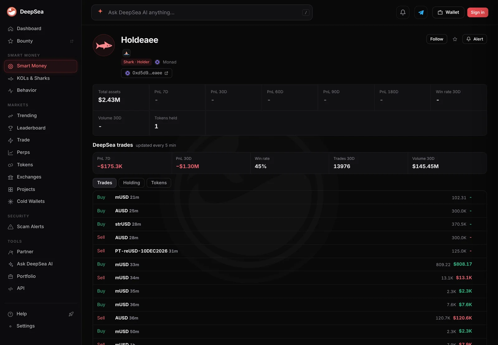

A Monad shark put $3.6 million into earnAUSD, a fifth of the yield token's market value
The busiest shark on Monad bought $16 million of tokens in a day, mostly dollar tokens. Its biggest one-way bet was a yield version of AUSD that CoinGecko values at $17.7 million.
Key points
- In the 24 hours to 12:35 a.m. ET on November 11, 2026, a Monad shark wallet ending in eaee bought $15,995,226 of tokens and sold $7,976,278 in 291 trades, DeepSea shows.
- Its largest one-way buy was $3,603,116 of earnAUSD, a yield-bearing AUSD vault token, in 5 trades. CoinGecko puts earnAUSD's market value at $17.68 million.
- It also bought $1,792,267 of strUSD and sold none. Its 30-day realized result is minus $1.30 million.
 What DeepSea's data shows
What DeepSea's data shows
DeepSea's 24-hour flow table tracked just two shark wallets on Monad. One, ending in 456a, made a single $93,877 sale. The other, ending in eaee, did everything else: 291 trades, $15,995,226 bought and $7,976,278 sold. Every Monad buy in the table came from it.
Most of the money went into dollar tokens. earnAUSD topped DeepSea's buying list for all chains: $3,603,116 bought, nothing sold, in 5 trades. strUSD took $1,792,267 in 3 trades, also with no sales. AUSD saw $7,996,609 bought and $5,937,609 sold in 25 trades, and MetaMask USD (mUSD) $1,723,282 bought and $1,351,686 sold in 227 trades. It also bought $715,674 of aHYPER and sold $201,045.
Its wallet page (DeepSea name Holdeaee) showed only $2.43 million in total assets and one token held at 12:57 a.m. ET, less than the day's one-way buys. That gap is not explained by the data; vault tokens may not be counted in the page's total. Over 30 days the page counts 13,976 trades and $145.45 million of volume.
DeepSea's live feed shows the pattern. At 12:30 a.m. ET one transaction swapped 300,000 AUSD for 370,467 strUSD, valued at $382,158. Two minutes later the wallet bought 300,000 AUSD again.

Data: DeepSea (desea.io), checked November 11, 2026, 12:36 a.m. ET.
What earnAUSD is
New to wallet tracking? Read what DeepSea is and how it labels wallets.
CoinGecko describes earnAUSD as the main yield token for AUSD: users deposit the dollar token in a vault that spreads it across lending, basis trades and DeFi. It links to the Upshift app. CoinGecko showed earnAUSD at $1.045, a market value of $17.68 million, and no exchange trading in 24 hours. A $3.6 million buy is about 20% of that value.
AUSD itself, issued by Agora, was at $0.9989 with a market value of $156.1 million on CoinGecko. CoinGecko does not list the strUSD token DeepSea tracks.
What independent data shows
DefiLlama counted $663.2 million of stablecoins on Monad at 12:55 a.m. ET, so this one wallet bought dollar tokens worth more than 2% of that in a day. DefiLlama put total deposits in Upshift, across all its chains, at $487.1 million.
Shark eaee, 24-hour buys on Monad
US$ million
24 hours to 12:35 a.m. ET, November 11, 2026. Source: DeepSea live flows.

Its record
DeepSea's PnL table shows the wallet at minus $175,308 for 7 days (153 of 311 closed trades won) and minus $1,295,742 for 30 days. That is a little better than the minus $1.35 million in our November 9 story, when it made 267 trades in a day, mostly in mUSD.
Why it matters
A stablecoin is a token built to stay worth $1, and AUSD is one. earnAUSD is different: it is what a user gets for putting AUSD into a yield vault, so its price can sit a little above $1, as it does at $1.045.
In plain terms, this wallet traded about $8 million of AUSD back and forth, then put about $5.4 million into earnAUSD and strUSD and sold none of it the same day. Its wallet page shows only $2.43 million in assets, a gap the data does not explain.
CoinGecko also showed no exchange trading in earnAUSD over 24 hours. A fifth of a token that did not trade on any exchange in a day is a large position that is hard to sell quickly on the open market.
LC Insight analysis
This section is our reading of the facts above, not a statement of fact.
- We think the shift matters more than the size: after days of fast mUSD and AUSD trades, the wallet bought about $5.4 million of earnAUSD and strUSD without selling any in the same day.
- Yield vaults pay holders over time. Moving into earnAUSD looks like a wallet choosing to earn on its dollars rather than trade them, though the data cannot confirm intent.
- One wallet owning about a fifth of a $17.7 million vault token is a lot of concentration. Its exit would be felt.
What's next
- Whether the wallet keeps its earnAUSD and strUSD
- earnAUSD's market value on CoinGecko
- Monad's stablecoin total on DefiLlama
Disclaimer. This article is based on public information and the sources listed below as of the update time shown. It is for information only and is not investment, legal or tax advice. Figures may change as companies and authorities publish new data.
Sources
- DeepSea, live flows by token and wallet, 24 hours (read November 11, 2026, 12:36 a.m. ET)
- DeepSea, live trade feed, about 12:30 to 12:36 a.m. ET, November 11, 2026
- DeepSea, realized PnL table, 7 and 30 days (read November 11, 2026, 12:36 a.m. ET)
- CoinGecko, earnAUSD price, market value and description (read November 11, 2026, 12:42 a.m. ET)
- CoinGecko, AUSD (Agora) price and market value (read November 11, 2026, 12:47 a.m. ET)
- DefiLlama, stablecoins by chain and Upshift TVL (read November 11, 2026, 12:55 a.m. ET)